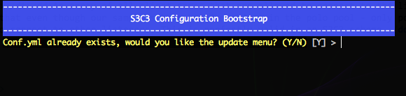
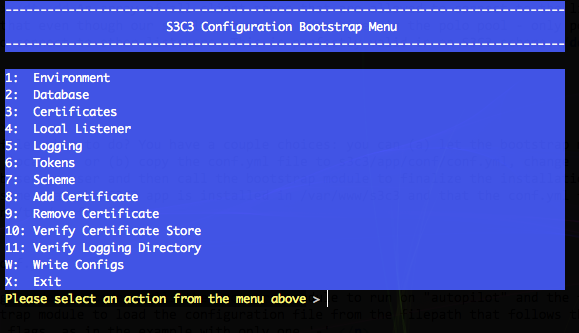

Installation
Before you begin installing you should determine what your S3C3 Scheme will look like. Familiarize yourself with the basics of the scheme before beginning.
Requirements:
There are several requirements for S3C3 to run. In bulleted form:
- PHP 5.3 or later
- PECL HTTP support
- PHP OpenSSL support
- A way to generate and sign certificates with proper usage settings like XCA
Once you have met all of the requirements and have your certificates ready to go you can copy or move the s3c3 folder to where the web server will serve it out. Make sure to change the ownership of the files to web server user, so it can update configurations when needed.
You will need 2 more directories where the web server has write privileges, that are outside the usual web
document space. One is for logging and the other will hold all the certificates. As an example, we will assume I
have all my certificates and keys ready in the keyexport folder of my home directory:
sudo mkdir /var/s3c3
sudo mkdir /var/s3c3/certificate
sudo cp ~/keyexport/* /var/s3c3/certificate/
sudo mkdir /var/s3c3/log
sudo chown -R www-data:www-data /var/s3c3
You do not need to worry about the permissions on the certificate store until after you complete the installation, at which time you should verify that they are all, indeed 0400.
Configuration:
Configuration in S3C3 is managed first by a YAML file in app/conf/conf.yml and then, if desired, the token and scheme configurations can be maintained in the database. Creating the configuration file first will save a whole lot of time in terms of installation.
If you look at the sample configuration file (conf.yml.example) you will see a whole mess of comments. You do not need to include the comments in your configuration file; they are there to help you initially set it up.
The configuration file is broken into 7 sections. Each of them are explained in detail here.
Environment Settings [env]
env:
deployment: dev
config: db
local_scheme_name: polo1
debug:
level: 5
token: s3c3_debug_token
There are 4 sections in env with debug having 2 parts.
deployment- What kind of deployment this is (development, [
dev], staging [stage], or production [prod]). This software is meant only as a proof of concept, do NOT use this in production environments! This field is not currently used by the application beyond setting up logging targets. config- Either database [
db] or file [file] - this determines where the application looks for the scheme configuration and token settings. Setting this value todbdoes not mean you will no longer need the conf.yml file in place! local_scheme_name- This is the client name for this machine. The client name must match the listener name with a number added at the end. (See Scheme Names).
debug.level- The debug level. Currently any value over 0 will cause the application to log debug output wherever it is called.
debug.token- Debug token for use in extended logging.
Database Settings [database]
database:
prefix: null
dbmaster:
driver: mysqli
host: masterdb.local
port: 3306
user: s3c3
password: gbYygw2EaT9cMtE9Rm7B6gLK
defaultdb: s3c3
dbslave:
driver: mysqli
host: slavedb.local
port: 3306
user: s3c3
password: 6VurfGpGAtg7mZLsQ63cn5wV
defaultdb: s3c3
There are 3 sections in database with dbmaster and dbslave having
6 subsections each. If your deployment does not use a master-slave replication you can use the same values
for both, otherwise the application will use the values in dbmaster for read-write connections
and those in dbslave for read-only connections.
prefix- A string prefix to put in front of your table names. Not thouroughly tested, may still have some bugs, although the unittest prefixing does work.
dbmaster.driver- The driver name for your database connection. The application knows about MySQL, PostgreSQL and Sqlite. The mysqli driver is recommended for MySQL, while PostgreSQL uses postgres and Sqlite uses sqlite.
dbmaster.host- The host that the application will need to connect to in order to connect to the database.
dbmaster.port- The port on which the database server listens. The default port for MySQL is 3306, and for PostgreSQL is 5432. Note that Sqlite does not listen on a port, and the 'host' name must be the absolute path to the database file.
dbmaster.user- The user name that has permission to read/write in the S3C3 database.
dbmaster.password- The user password for the user in
user, above. dbmaster.defaultdb- The actual database that the application will use.
dbslave- Sub-items are the same as for
dbmaster.
Certificate Settings [certificate]
certificate:
store: /var/s3c3/certificates
validate: 1
There are 2 items in certificate.
store- The absolute path to the directory where the certificates are stored. This directory must be writable by the web server user.
validate- Whether the application should validate certificates [
1] or ignore validation [0]. Note that the application does not currently skip validation.
S3C3 Local Listener Settings [s3c3_local_listener]
s3c3_local_listener:
endpoint: 'http://localhost/s3c3/'
internal_token: dTuHdJpvkBFzhXEcJyKAspBQ
version: 1
There are 3 items in s3c3_local_listener.
endpoint- The full url to S3C3 on the local machine. This is used by the LocalClient to retrieve certificates for the Client class, and is used by the Bootstrap module.
internal_token- A random string used to verify that the client sending the request is doing so from the same local configuration file that the listener is using.
version- Currently version 1. Not checked, but may be used in later versions.
Logging Destinations [logging]
logging:
file:
dir: /var/s3c3/log/
mail:
to: dev@s3c3demo.com
from: server@s3c3demo.com
sms:
to: 3605551234@txt.carrier.net
from: server@s3c3demo.com
There are 3 items in logging, with mail and sms having 2
sub-sections each and file having only one sub-section.
file.dir- The directory to which the logging system will write. This directory must be writable by the web server user.
mail.to- Where should email logs (error warnings) be sent? You can use a single
email address here or an array of addresses like:
to: [jo@example.com, sam@other.com, pat@why.co.uk] mail.from- The address that mail will be sent from.
sms.to- Where should critical messages be sent? This uses email format to send to SMS, so you can use regular old email addresses here as well. This is only used in a production environment, so is very not likely to be used in this application any time soon.
sms.from- The address that SMS email will be sent from.
Token Settings [token]
token:
expire: 90
length: 64
strength: maximum
delete_on_load: 1
There are 4 items in token.
expire- Expire time in seconds.
length- Length of tokens to generate, 32 - 128 characters. Recommend 64.
strength- There are 4 strength levels to choose from for S3C3 single-use tokens:
weak: uses only hexadecimal characters [0123456789abcdef]medium: uses [0123456789ABCDEFGHIJKLMNOPQRSTUVWXYZabcdefghijklmnopqrstuvwxyz]strong: uses [#+-./0123456789=ABCDEFGHIJKLMNOPQRSTUVWXYZ_abcdefghijklmnopqrstuvwxyz~]maximum: uses all printable ascii characters (0x20 - 0x7F) except ':' (0x3A) (which is used for token section division) but will not start or end with a space (0x20).
delete_on_load- Should the application delete expired token strings and mark them
as expired before looking up a token context? [
1] for yes, [0] for no. Unless the server you are testing this out on is incredibly busy, the extra overhead of one more database call on token lookup is worth the trouble saved by having to do it via cron job or other method.
Scheme Layout [scheme]
scheme:
listeners:
polo: 'http://haproxy.polo.local/s3c3/'
gold: 'http://gold.local/s3c3/'
mac: 'http://vm09.local/s3c3/'
clients: [polo1, polo2, gold1, mac1]
There are 2 items in scheme with listeners having an arbitrary number of
sub-items.
listeners- Listeners is a hash of listener names tied to their urls. This is used to let the Client know where to connect when it is told to connect to a listener. Note that the urls do not have to match the names of the listeners, although it would probably be easier for administration if they did in some manner. Urls must either end with a slash '/' or can be extended out to include index.php if the web server does not automatically send directory requests to that file.
clients- An array of all client names that are allowed to connect to the listeners in this scheme. Notice that even though our sample scheme has 3 machines in the polo pool - only polo1 and polo2 are allowed to connect to other listeners. This is perfectly valid in an S3C3 scheme.
Calling Bootstrap:
Now, you have your conf.yml file, what to do? You have a couple choices: you can (a) let the bootstrap module load the conf.yml to its proper location, or (b) copy the conf.yml file to s3c3/app/conf/conf.yml, change ownership of the file to the web server user and then call the bootstrap module to finalize the installation.
Method (a) first: we will assume that the S3C3 app is installed in /var/www/s3c3 and that the conf.yml file you just completed is sitting in /tmp/conf.yml
cd /var/www/s3c3
sudo php bootstrap/bootstrap.php -af /tmp/conf.yml
That's all it takes. The flag -a tells the bootstrap module to run on "autopilot" and the flag
-f tells the bootstrap module to load the configuration file from the filepath that follows the
flag. Note that you can combine flags, as in the example with only one '-'.
The only other flag available to the bootstrap module is -c which tells it to try and run in
color for xterm or similar. (This will not work in DOS, sorry). This comes in handy for the next method.
Method (b): again we will assume that the S3C3 app is installed in /var/www/s3c3 and that the conf.yml file you just completed is sitting in /tmp/conf.yml. Further, we will assume that the web server username is www-data.
cd /var/www/s3c3
sudo mv /tmp/conf.yml /var/www/s3c3/app/conf/
sudo chown www-data:www-data /var/www/s3c3/app/conf/conf.yml
sudo php bootstrap/bootstrap.php -c
This will now start the bootstrap module and it will ask 'Conf.yml already exists, would you like the update
menu? (Y/N)'.

Answer Y (hit Enter, Y is the default) and you will get a menu that looks like:

Answer W and hit Enter and the bootstrap module will do all the same writing and saving that it does in method (a).